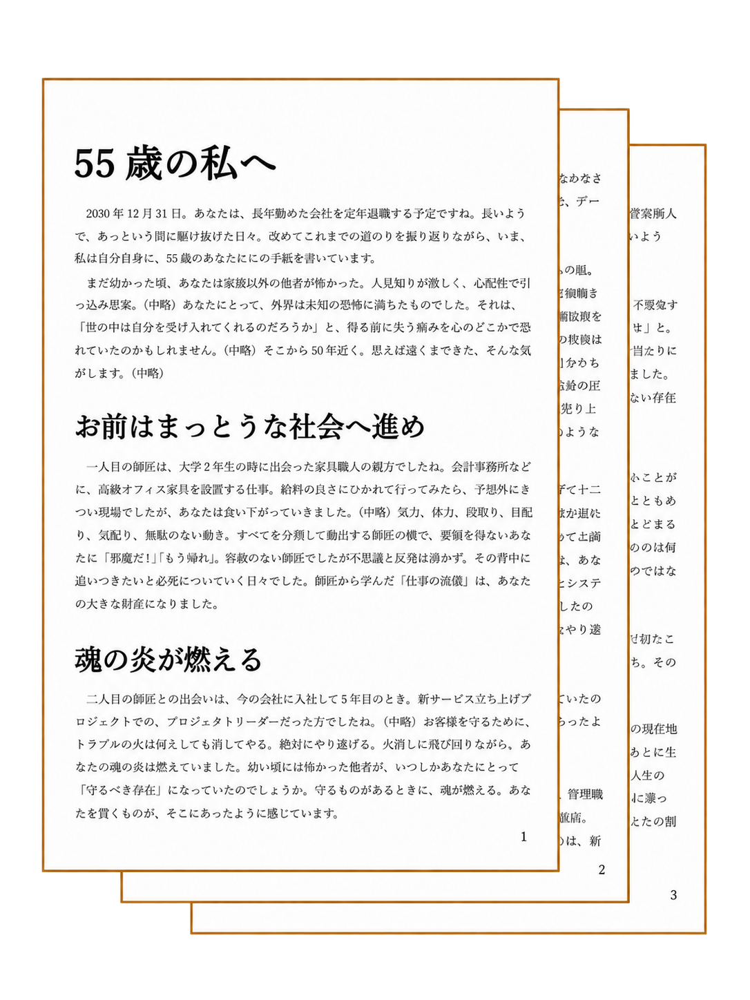

ROLE-LETTERING SESSION
ライターとの対話を通じて自分自身と向き合い、
自分に宛てた言葉を受け取る、投函しない手紙。
コーチングでもカウンセリングでもない、
自分と出会い直すためのセッションです。
About this service
たとえば、職場や家庭での転機や節目。慣れ親しんだ環境や役割を手放す「終わり」が近づき、次の方向がまだ見えないとき、人は長いトンネルに入ったような感覚に陥ります。心理学者ウィリアム・ブリッジスは、この期間を「ニュートラルゾーン」と名づけ、乗り越えるための有効な方法の一つとして、自分のこれまでの歩みを振り返る時間を持つことを推奨しています。
けれど、ひとりで振り返るのは難しいもの。「自分への手紙」では、これまで1,000人超の人生を取材したライターとの対話を通じて、まだ言葉になっていない人生の物語に光をあて、これからの自分に向けた一通の手紙として言葉を受け取ります。コーチングでもカウンセリングでもない、自分と出会い直すためのセッションです。
Who is this for
User's voice
55歳・男性 会社員の方
Sample
語っていただいたエピソードをもとに「私からあなたへ」と、語りかけの形で構成しています。
※ご了承を得て一部を抜粋してご紹介しています。

※実際の手紙は、PDFまたはワード（Word）形式でお届けします。上記はその一部を抜粋したものです。
Flow
「自分への手紙」に関心を持っていただいたきっかけや思い、ご不安なことなどを丁寧にうかがいます。
これまでの人生を振り返るための事前シートにご記入いただきます。問いに答える時間もまた、ご自身の人生に目を向ける大切な時間です。
事前シートをもとに、これまでの人生についてお話をうかがいます。語りながら、まだ言葉になっていない思いや、これまでとは違う人生の見え方にも目を向けていきます。
※ 対面での対応は東京都・神奈川県東部・千葉県西部が対象となります。それ以遠の場合はオンラインまたは出張対応（費用別途）をご相談ください。
対話をもとに、ライターが「自分への手紙」として文章にまとめます（2,000〜2,500文字目安）。完成した原稿をPDFでお送りし、内容や表現をご確認いただきます。
お手紙の完成版を、WordまたはPDF形式でお送りいたします。
PRICE
対話：90～120分
文章量の目安：2,000〜2,500字
サイトオープンにあたり、
「自分への手紙」を
モニター価格でご提供いたします。
IN PERSON
対面
セッション
定 価
30,000円（税込）
モニター価格
交通費込み
ONLINE
電話・オンライン
セッション
定 価
25,000円（税込）
モニター価格
納品はWordまたはPDF形式です。便箋等への直筆・製本はございません。
対面対応エリア：東京都・神奈川県東部・千葉県西部。それ以遠は出張対応（費用別途）をご相談ください。
どんな小さなことでも、
お気軽にご相談ください。
人生を振り返ることへの想いを、
丁寧にうかがいます。